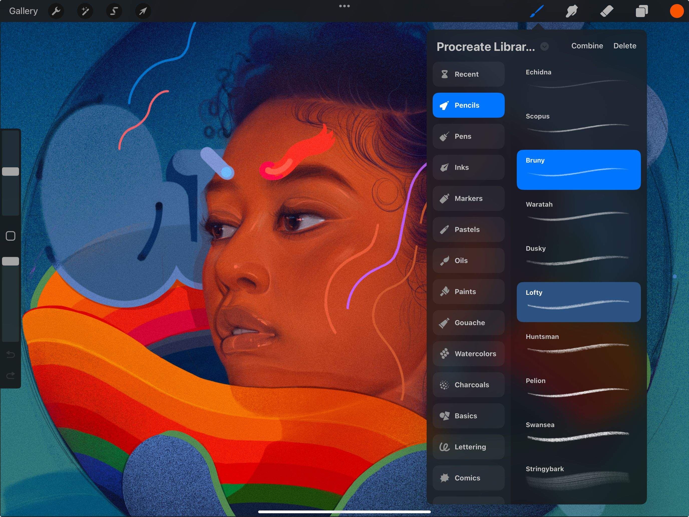
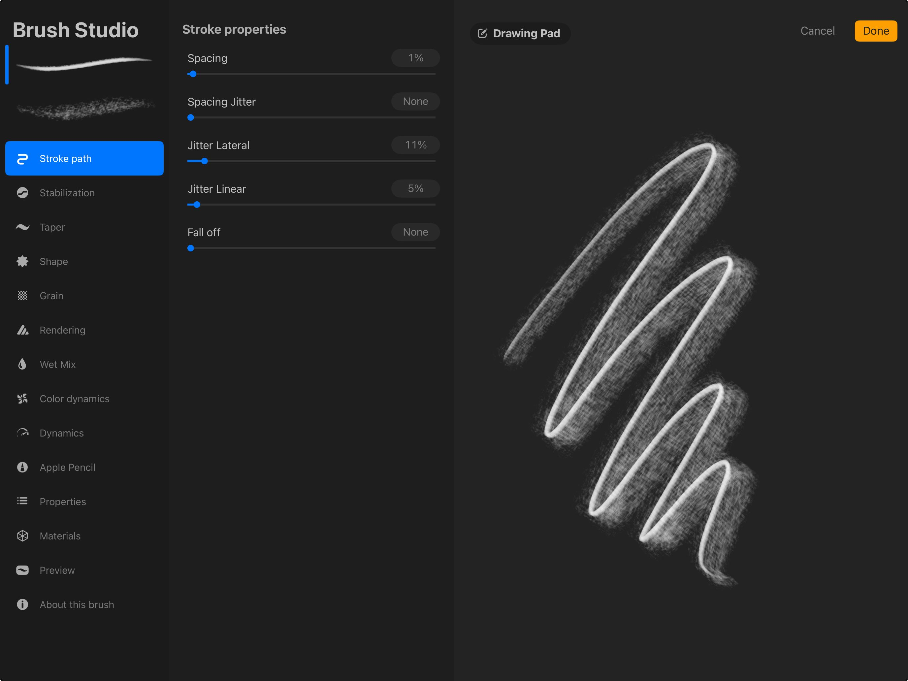
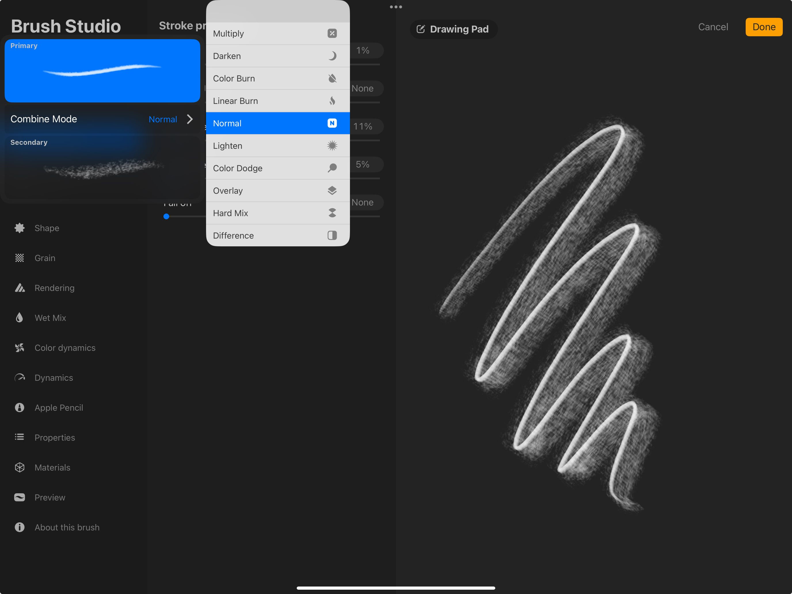
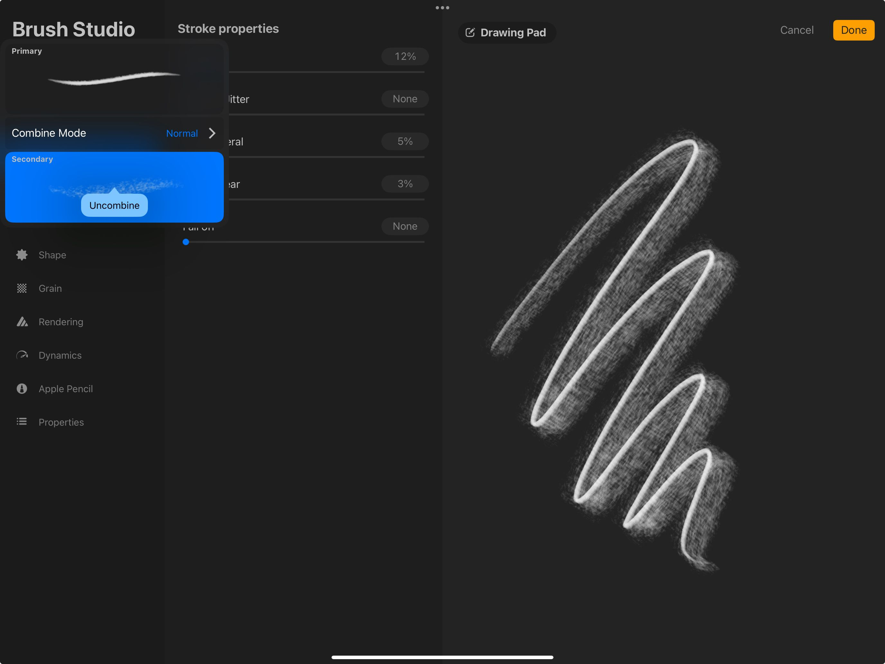

📖 Đã dịch sang tiếng Việt. Thuật ngữ chuyên môn giữ tiếng Anh — rê chuột để xem nghĩa (tooltip).
Dual Brush
Tạo ra gần như vô hạn hiệu ứng nét cọ mới bằng cách kết hợp hai cọ Procreate riêng biệt. Tính năng biến đổi này sử dụng hình dáng và hạt có thể chỉnh sửa của mỗi cọ để tạo ra một cọ mới độc đáo.
Kết hợp cọ
Chọn, kết hợp, chỉnh sửa, pha trộn và tách Dual Brush.
Create
Chạm nút Paint, Smudge hoặc Erase để mở Brushes. Tìm hai cọ bạn muốn kết hợp.
Pro Tip
Brushes must be in the same brush set for them to combine. You can only combine single brushes - existing Dual Brushes cannot combine. Since Procreate 5.4, you can combine default brushes as long as they aren't already Dual Brushes.

Chạm cọ đầu tiên để chọn làm Primary (cọ chính). Khi được chọn, cọ Primary sẽ chuyển màu xanh sáng. Vuốt để chọn một cọ Secondary (cọ phụ), cọ đó sẽ chuyển màu xanh đậm. Chữ Combine sẽ xuất hiện ở góc trên bên phải của thư viện cọ. Chạm vào đây để gộp hai cọ thành một cọ mới duy nhất mang phẩm chất của cả hai.
Dual Brush mới sẽ lấy tên của cọ Primary trong cặp. Để đổi tên, chạm và giữ cọ rồi chọn Rename để hiện bàn phím iPadOS.
Edit
Thay đổi vẻ ngoài của Dual Brush bằng cách chỉnh sửa các cọ thành phần.


Chạm Dual Brush để vào Brush Studio. Ở góc trên bên trái của Brush Studio, bạn sẽ thấy bản xem trước của hai cọ tạo nên Dual Brush.
Bạn có thể chỉnh thiết lập của từng cọ độc lập với nhau. Chạm cọ muốn chỉnh. Khi được chọn, một đường màu xanh sẽ xuất hiện bên cạnh. Mọi chỉnh sửa bạn thực hiện chỉ áp dụng cho cọ đang chọn.
Combine Mode (chế độ kết hợp)
Thay đổi vẻ ngoài của Dual Brush bằng cách điều chỉnh cách các cọ pha trộn với nhau.


Việc đổi Combine Mode của Dual Brush có thể tạo ra các phối hợp hình ảnh thú vị. Điều này tương tự như cách đổi Blend Mode (chế độ hòa trộn) của lớp làm thay đổi cách hai lớp pha vào nhau.
Chạm Dual Brush để vào Brush Studio. Ở góc trên bên trái của Brush Studio, bạn sẽ thấy bản xem trước của hai cọ tạo nên Dual Brush. Chạm vào bất kỳ cọ nào để mở rộng bảng và hiện tùy chọn Combine Mode.
Mặc định, Combine Mode đặt ở Normal. Chạm vào để mở danh sách đầy đủ các Combine Mode.
Chạm bất kỳ Combine Mode nào để xem kết quả cập nhật trực tiếp trong Drawing Pad. Hoặc bạn có thể xem phần Blend Modes để biết thêm thông tin.
Pro Tip
If you are used to painting with a dual brush from an older version that makes use of the 'Normal' Combine mode, you can try toggling the option at the bottom of the Rendering tab in Brush Studio .
Tách cọ (Uncombine)
Đưa Dual Brush về lại hai cọ riêng biệt.

Chạm Dual Brush để vào Brush Studio. Ở góc trên bên trái của giao diện Brush Studio, bạn sẽ thấy bản xem trước của cả hai cọ. Chạm bản xem trước bất kỳ để mở rộng bảng. Chạm bản xem trước của Secondary Brush, rồi chạm Uncombine.
Dual Brush sẽ tách trở lại thành hai cọ thành phần riêng biệt.
Still have questions?
If you didn't find what you're looking for, explore our video resources on YouTube or contact us directly. We’re always happy to help.